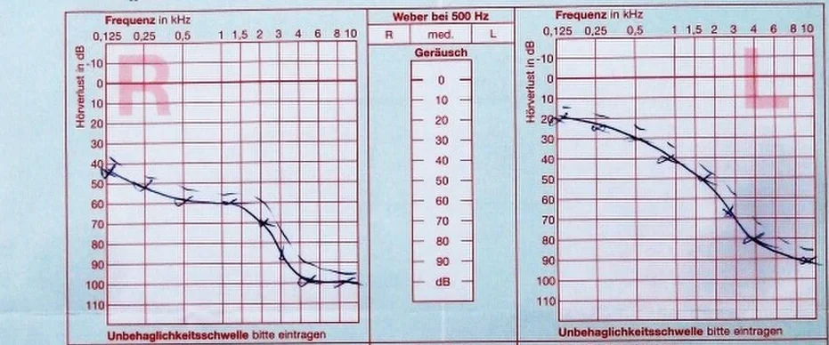

DX.4 — Presbyacousie
La presbyacousie installe lentement une surdité de perception bilatérale et symétrique, d’abord sur les aigus, qui gêne surtout la compréhension dans le bruitS1S7. Le médecin de premier recours confirme la perte à l’audiogramme, écarte une asymétrie, puis organise avec l’oto-rhino-laryngologiste (ORL) un appareillage précoce, cofinancé par l’assurance-vieillesse et survivants (AVS)S5S3.
1. Définition
Les Hôpitaux universitaires de Genève (HUG) définissent la presbyacousie comme la surdité due au vieillissement de l’organe auditif, avec des prédispositions génétiques familiales et non familialesS1.
2. Épidémiologie (Suisse, puis Europe)
Les HUG estiment qu’un tiers des personnes présente une presbyacousie dès 65 ans, ce qui en fait la première cause de baisse auditive du sujet âgéS1. L’Enquête suisse sur la santé relève des troubles de l’audition chez 8,4 % des habitants, un sixième des 65 à 74 ans et un tiers des plus âgésS2. Les chiffres suisses et européens situent la charge, et les gradients sociaux montrent qui consulte trop tard.
Chiffres utiles : prévalence selon l’âge, le sexe et l’appareillage
| Donnée | Valeur | Population et année | Source |
|---|---|---|---|
| Presbyacousie dès 65 ans | Un tiers des personnes | Genève, page mise à jour en 2026 | S1 |
| Troubles de l’audition déclarés | 8,4 % de la population | Suisse, Enquête suisse sur la santé 2012/2017 | S2 |
| Déficience auditive fonctionnelle (malgré l’appareil) | 5,5 % de la population | Suisse, même enquête | S2 |
| Troubles de l’audition de 65 à 74 ans | Environ un sixième | Suisse | S2 |
| Troubles de l’audition dès 75 ans | Environ un tiers | Suisse | S2 |
| Écart entre hommes et femmes âgés | Presque dix points de pourcentage, au détriment des hommes | Suisse | S2 |
| Port d’un appareil parmi les malentendants de 75 ans ou plus | Plus des deux tiers | Suisse | S2 |
| Coût annuel des déficiences auditives pour la société | Environ 7 milliards de francs | Suisse, estimation | S2 |
| Surdité après 65, 75 et 85 ans | Plus de 30 %, près de la moitié, 4 personnes sur 5 | France, revue de 2019 | S7 |
| Perte auditive invalidante après 60 ans | Plus de 25 % | Monde, OMS (source mondiale) | S10 |
Le bulletin de l’Obsan précise que les données déclarées sous-estiment probablement l’aggravation avec l’âge, car les personnes perçoivent de moins en moins leur perte comme un troubleS2. Les appareils auditifs réduisent de près de moitié la prévalence de la déficience fonctionnelle chez les personnes âgées, selon la même enquêteS2.
Gradients sociaux et conséquences mesurées en Suisse
| Comparaison | Prévalence de la déficience auditive | Lecture clinique | Source |
|---|---|---|---|
| Sans formation postobligatoire contre haute école | 13,6 % contre 6,7 % | Le repérage doit viser les personnes peu formées | S2 |
| Quintile de revenu le plus bas contre le plus haut | 9,7 % contre 4,6 % | Le coût restant freine l’appareillage | S2 |
| Forte exposition professionnelle au bruit | Probabilité accrue de 3,1 points | Le bruit s’ajoute au vieillissement | S2 |
| Malentendants contre normo-entendants | Deux personnes dépressives de plus sur 10 | Le dépistage de la dépression fait partie du suivi | S2 |
L’Obsan relève que la déficience auditive s’associe à l’isolement social et à la solitude, deux facteurs de risque connus de maladie psychiqueS2. Ces écarts restent toutefois observationnels ; ils ne prouvent pas que l’appareillage corrige la dépression ou la mémoireS2.
3. Physiopathologie
La presbyacousie résulte d’un vieillissement de l’ensemble des structures neurosensorielles auditives, si bien que l’atteinte peut siéger dans la cochlée, le nerf ou les centresS7. Des facteurs intrinsèques, mitochondriaux, génétiques et microvasculaires, s’y combinent avec le bruit et les médicaments ototoxiquesS7. La base anatomique, les facteurs aggravants et la corrélation clinique rattachent la perte des aigus à la gêne dans le bruit.
Base à connaître : de l’oreille externe au nerf auditif
Les trois étages de l’oreille. Blausen Medical représente en couleurs les trois étages de l’oreille, du pavillon jusqu’au nerf qui quitte la cochléeS12.

Le lecteur cherche d’abord seul les étages normaux dans la presbyacousie et celui qui vieillit, puis il ouvre la copie annotée.
- 1. Le conduit reste libre ; un bouchon de cérumen aggrave pourtant souvent la gêne du porteur d’appareilS12S7.
- 2. Le tympan reste normal, car la presbyacousie n’atteint pas l’oreille moyenne, ce qui distingue l’otoscopie des causes de transmissionS12S7.
- 3. Les osselets transmettent normalement ; une surdité de transmission associée oriente vers une autre causeS12S11.
- 4. La cochlée vieillit d’abord sur les fréquences aiguës, ce qui explique la plainte précoce sur le chant des oiseauxS12S1.
- 5. Le nerf et les voies centrales vieillissent aussi, ce qui explique une compréhension plus mauvaise que ne le prévoit l’audiogrammeS12S7.
Le schéma ne montre pas le vieillissement lui-même ; il situe seulement les étages que l’otoscope, le diapason et l’audiogramme explorent tour à tourS12S7.
Facteurs intrinsèques et extrinsèques
| Catégorie | Facteur | Conséquence pratique | Source |
|---|---|---|---|
| Intrinsèque | Altérations mitochondriales, désordres génétiques et cellulaires | Une étude génétique n’est pas systématique dans la forme classique | S7 |
| Intrinsèque | Microvascularisation altérée par hypertension, diabète et dyslipidémie | Le contrôle des facteurs cardiovasculaires limite la dégénérescence | S7 |
| Intrinsèque | Prédisposition familiale ou non familiale | L’anamnèse familiale fait partie du bilan | S1 |
| Extrinsèque | Exposition au bruit | La protection auditive reste utile à tout âge | S7S2 |
| Extrinsèque | Médicaments ototoxiques : aminosides, sels de platine, vincristine, aspirine à forte dose | Le médecin les recherche à l’interrogatoire et les évite si possible | S7 |
| Génétique ciblée | Neuropathie auditive, déclin cognitif rapide ou traitement par aminoside prévu | L’étude génétique se discute alors | S7 |
La revue toulousaine décrit la presbyacousie moins comme une maladie que comme un processus de vieillissement, ce qui n’exclut pas une prise en charge activeS7.
Corrélation : mécanisme, signe, examen, décision
| Mécanisme | Signe | Examen | Décision |
|---|---|---|---|
| Atteinte cochléaire des aigus | Chant des oiseaux mal perçu | Audiogramme tonal descendant sur les aigus | Appareillage selon la gêneS1S7 |
| Atteinte neurale ou centrale | Gêne dans le bruit, au restaurant | Audiométrie vocale : seuil d’intelligibilité élevé | Réglages, aides techniques, stratégies de communicationS7S5 |
| Surdité centrale pure | Seuils tonals conservés, compréhension effondrée | Tests spécifiques chez le spécialiste | Bilan cognitif, car la forme peut précéder la maladie d’AlzheimerS7 |
| Isolement progressif | Retrait social | Questionnaire de handicap auditif | Consultation rapide et appareillageS1S7 |
4. Démarche diagnostique
Le médecin de premier recours repère la plainte, examine le conduit et le tympan, qualifie la surdité au diapason, puis demande un audiogramme tonal et vocalS7S5. Il retient la presbyacousie devant une perte de perception bilatérale, symétrique et lente, après avoir écarté les diagnostics qui exigent un délai courtS7S5. Le National Institute for Health and Care Excellence (NICE) britannique fournit les délais d’orientation, faute de délais suisses chiffrés dans les sources luesS5. La démarche en étapes, le tableau comparatif et les pièges précisent chaque décision.
Démarche en six étapes, du repérage au suivi
| Étape | Geste | Seuil ou critère | Conduite | Source |
|---|---|---|---|---|
| 1. Repérer | Questions sur le bruit de fond, la télévision et l’entourage | Réponse positive ou plainte de la famille | Évaluation audiologique | S7S5 |
| 2. Trier l’urgence | Rechercher une aggravation rapide ou un déficit facial | Aggravation en 4 à 90 jours ; asymétrie avec déficit facial | Avis dans les 2 semaines ; avis dans les 24 heures | S5 |
| 3. Examiner | Otoscopie, puis Weber et Rinne | Otoscopie normale | Le diapason qualifie la surdité | S7 |
| 4. Mesurer | Audiométrie tonale et vocale | Perte de perception symétrique prédominant sur les aigus | Diagnostic retenu | S7 |
| 5. Chercher l’asymétrie | Comparer les deux oreilles | Écart de 15 dB ou plus sur 2 fréquences voisines | Imagerie par résonance magnétique (IRM) des conduits auditifs internes à envisager | S5 |
| 6. Traiter et suivre | Évaluer la gêne et proposer l’appareillage | Communication altérée | Appareil, puis contrôle à 6 à 12 semaines | S5S1 |
Tableau comparatif : presbyacousie et diagnostics voisins
| Diagnostic | Installation | Côté | Otoscopie | Diapason | Indice décisif | Source |
|---|---|---|---|---|---|---|
| Presbyacousie (DX.4) | Lente, après 65 ans | Bilatérale, symétrique | Normale | Perception | Perte des aigus et gêne dans le bruit | S1S7 |
| Surdité brusque (DX.6) 🚩 E1 | En quelques heures ou jours | Unilatérale | Normale | Perception | Délai court : avis ORL rapide | S7S5 |
| Cholestéatome (DX.9) 🚩 E3 | Progressive | Unilatéral | Anormale | Transmission | Otorrhée chronique, aspect anormal du tympan | S7S5 |
| Schwannome vestibulaire (DX.8) 🚩 E4 | Progressive | Unilatérale ou asymétrique | Normale | Perception | Asymétrie de 15 dB ou plus : IRM | S5S7 |
| Bouchon de cérumen (DX.1) | Souvent brutale après l’eau | Uni- ou bilatéral | Conduit obstrué | Transmission | Le retrait corrige la perte | S7 |
| Surdité induite par le bruit (DX.5) | Lente, après exposition | Bilatérale | Normale | Perception | Anamnèse professionnelle d’exposition au bruit | S7S2 |
| Otospongiose (DX.3) | Progressive, adulte jeune | Souvent bilatérale | Normale | Transmission | Rinne négatif, Weber vers l’oreille atteinte | S11 |
Pièges de la démarche diagnostique
| Piège | Pourquoi il trompe | Parade | Source |
|---|---|---|---|
| Conclure à la presbyacousie devant une perte asymétrique | Une cause rétrocochléaire peut se cacher derrière l’âge | Comparer les oreilles et envisager l’IRM dès 15 dB d’écart | S5S7 |
| Attendre que le patient se plaigne | La perte insidieuse rend le patient peu conscient de son trouble | Interroger l’entourage et repérer activement | S7S2 |
| Se fier aux seuils tonals seuls | La compréhension peut s’effondrer avec des seuils conservés | Demander une audiométrie vocale | S7 |
| Attribuer un déclin cognitif à l’âge sans tester l’audition | La surdité peut être une comorbidité de la démence | Proposer une évaluation auditive | S5 |
| Oublier le conduit | Un bouchon s’ajoute souvent chez le porteur d’appareil | Otoscopie à chaque consultation | S7 |
5. Anamnèse ciblée et drapeaux rouges
L’anamnèse cherche la gêne dans le bruit, le retentissement social et professionnel, les expositions passées et les drapeaux rouges qui changent le délaiS7S5. Les HUG font du retrait social un signal d’alerte, car il favorise la démence par manque de stimulations cérébralesS1. Les questions ciblées, le retentissement, les drapeaux rouges et les populations particulières mesurent la gêne quotidienne et cherchent l’asymétrie.
Retentissement à évaluer, domaine par domaine
| Domaine | Ce que décrivent les sources | Question à poser | Conséquence | Source |
|---|---|---|---|---|
| Social | Évitement des situations gênantes, puis isolement progressif | Sortez-vous moins qu’avant ? | Appareillage sans attendre | S7S1 |
| Professionnel | Frein à l’embauche ; retraites anticipées motivées par la surdité après 60 ans | Votre audition gêne-t-elle votre travail ? | Contact avec le médecin du travail | S7 |
| Psychique | Deux personnes dépressives de plus sur 10 chez les malentendants | Vous sentez-vous seul ou triste ? | Dépistage de la dépression | S2 |
| Cognitif | Surdité associée au déclin cognitif ; mémoire de travail plus fragile | Oubliez-vous davantage ? | Test Codex, puis bilan si anormal | S7S2 |
| Sécurité | Alarmes et sons d’avertissement moins perçus | Entendez-vous la sonnette et l’alarme ? | Aides techniques et détecteurs | S5 |
| Loisirs | Musique moins appréciée | La musique vous plaît-elle encore ? | Objectif inscrit au plan de soins | S5 |
L’Obsan rappelle qu’un appareil n’offre pas la même efficacité pour toutes les pertes, si bien que le retentissement doit être réévalué après l’adaptationS2.
Questions ciblées et ce que la réponse change
| Question | Réponse évocatrice | Ce que la réponse change | Source |
|---|---|---|---|
| Comprenez-vous mal au restaurant ou dans les repas de famille ? | Oui | Gêne dans le bruit : premier signe fonctionnel | S7S1 |
| Votre entourage se plaint-il du volume de la télévision ? | Oui | Repérage par les proches, souvent avant le patient | S7 |
| La baisse s’est-elle installée en quelques jours ? | Oui | Sort du cadre de la presbyacousie : avis rapide | S5 |
| Avez-vous travaillé dans le bruit sans protection ? | Oui | Surdité due au bruit associée ; avis de médecine du travail chez l’actif | S7 |
| Avez-vous reçu aminosides, chimiothérapie ou aspirine à forte dose ? | Oui | Ototoxicité ajoutée | S7 |
| Une oreille est-elle nettement plus mauvaise ? | Oui | Asymétrie : imagerie à discuter | S5S7 |
| Avez-vous un acouphène, un vertige ou une hyperacousie ? | Oui | Orientation spécialisée selon le type | S5 |
| Évitez-vous désormais les sorties ? | Oui | Retrait social : consultation rapide | S1 |
Drapeaux rouges et délai de réponse
| Drapeau rouge | Diagnostic à craindre | Délai | Source |
|---|---|---|---|
| Perte unilatérale acquise avec trouble de la sensibilité ou chute faciale du même côté | Lésion neurologique ou accident vasculaire cérébral | Dans les 24 heures, ou filière de l’accident vasculaire | S5 |
| Aggravation sur 4 à 90 jours | Cause évolutive | Urgente, vue dans les 2 semaines | S5 |
| Immunodépression, otalgie et otorrhée sans réponse en 72 heures | Otite externe grave | Dans les 24 heures | S5S7 |
| Perte unilatérale ou asymétrique, acouphène unilatéral ou pulsatile | Cause rétrocochléaire ou vasculaire | Orientation diagnostique, IRM selon l’asymétrie | S5 |
| Surdité unilatérale progressive avec vertige ou paralysie faciale | Neurinome de l’acoustique | IRM injectée et ORL dans les semaines suivantes | S7 |
Populations particulières
| Population | Particularité | Conduite | Source |
|---|---|---|---|
| Personne avec démence ou trouble cognitif léger | La surdité peut être une comorbidité méconnue | Évaluation auditive ; contrôle tous les 2 ans sans surdité connue | S5 |
| Actif gêné au travail | La surdité freine l’embauche et pousse à la retraite anticipée | Alerter le médecin du travail | S7 |
| Personne à faible revenu | Prévalence double et recours moindre à l’appareil | Expliquer le forfait de l’assurance-vieillesse et survivants (AVS) | S2S3 |
| Patient atteint de Parkinson ou de polyarthrite | Manipulation difficile de l’appareil | Choisir un modèle adapté à la dextérité | S7S5 |
6. Examen physique ciblé, région par région
L’examen confirme une surdité de perception sans cause locale : il explore le conduit et le tympan, puis qualifie la perte au diapason et à la voixS7. Un otoscope et un diapason suffisent au médecin traitant pour un excellent bilan initial, selon la revue toulousaineS7. Chaque région a sa fenêtre : conduit et tympan, diapason, voix et communication et cognition et équilibre.
Région 1 — Conduit auditif et tympan
| Constat | Interprétation | Conduite | Source |
|---|---|---|---|
| Conduit libre, tympan normal | Compatible avec la presbyacousie | Poursuivre au diapason | S7 |
| Bouchon de cérumen | Peut expliquer à lui seul la surdité | Retirer, puis réévaluer l’audition | S7 |
| Perforation ou otite chronique | Cause de l’oreille moyenne | Avis ORL | S7S5 |
| Épanchement sans infection respiratoire | Hors du cadre de la presbyacousie | Avis ORL | S5 |
Chez le diabétique, l’immunodéprimé, le patient anticoagulé ou en cas de perforation, le retrait du bouchon revient d’emblée à l’ORLS7.
Région 2 — Audition au diapason
| Épreuve | Presbyacousie | Surdité de transmission | Source |
|---|---|---|---|
| Rinne | Conduction aérienne meilleure que l’osseuse | Rinne négatif : conduction osseuse meilleure | S11S7 |
| Weber | Non latéralisé lorsque la perte est symétrique (déduction) | Latéralisé du côté atteint | S11 |
| Diapason utilisé | 512 Hz | 512 Hz | S11 |
La ligne Weber de la colonne presbyacousie est une déduction, car la source décrit seulement la latéralisation dans la surdité de transmissionS11. La symétrie de la presbyacousie ne laisse en effet aucun côté vers lequel le son pourrait latéraliserS7.
Région 3 — Voix, communication et questionnaire
| Outil | Ce qu’il mesure | Interprétation | Source |
|---|---|---|---|
| Hearing Handicap Inventory for the Elderly – Screening Version (HHIE-S) | Handicap auditif ressenti du sujet âgé | Le plus simple pour la presbyacousie, non validé en français | S7 |
| Test de chiffres dans le bruit sur téléphone | Audition bilatérale en 3 minutes | Sensibilité et spécificité de plus de 80 % visées, évaluation en cours | S7 |
| Échange en consultation, bouche masquée | Dépendance à la lecture labiale | Dégradation majeure : appareillage insuffisant, avis ORL | S7 |
| Échelle de bénéfice de Glasgow ou de Client-Orientated Scale of Improvement | Restriction d’activité | Fixe les objectifs du plan de soins | S5 |
Région 4 — Cognition, équilibre et nerfs crâniens
| Examen | Résultat attendu | Résultat d’alerte | Source |
|---|---|---|---|
| Test Codex : trois mots et horloge | Normal : risque de démence installée minime | Deux tests anormaux : bilan en centre de la mémoire | S7 |
| Questionnaire d’orientation en cinq questions | Bonnes réponses | Score faible : bilan neuropsychologique | S7 |
| Nerf facial | Symétrique | Faiblesse faciale : IRM quel que soit l’audiogramme | S5 |
| Équilibre | Pas de vertige | Vertige non résolu ou récidivant : orientation spécialisée | S5 |
7. Approche syndromique
La presbyacousie réalise un syndrome de surdité de perception bilatérale, symétrique et progressive, qui touche d’abord les aigusS1S7. En revanche, un acouphène, un vertige, une asymétrie ou une compréhension disproportionnée oriente vers un autre syndrome, que le tableau des syndromes décline.
Syndromes et diagnostics associés
| Syndrome | Éléments | Orientation | Source |
|---|---|---|---|
| Perception bilatérale symétrique lente | Aigus, bruit de fond | Presbyacousie, surdité due au bruit | S1S7 |
| Perception asymétrique | Écart de 15 dB ou plus | Schwannome à exclure par IRM | S5 |
| Perception avec vertiges récidivants | Fluctuation, graves | Orientation spécialisée | S5 |
| Transmission | Rinne négatif | Oreille externe ou moyenne | S11 |
| Discordance tonale et vocale | Compréhension effondrée | Surdité centrale, possible prodrome de maladie d’Alzheimer | S7 |
8. Diagnostic positif et critères
Le diagnostic repose sur l’audiométrie, examen de référence, qui montre une surdité de perception bilatérale et symétrique prédominant sur les aigusS7. L’audiométrie vocale complète le bilan, car elle mesure le seuil d’intelligibilité, c’est-à-dire le niveau nécessaire pour reconnaître 50 % des motsS7. Les critères et seuils, le cliché d’un audiogramme réel et les stades évolutifs guident la lecture.
Critères diagnostiques et seuils chiffrés
| Critère | Seuil | Interprétation | Source |
|---|---|---|---|
| Audition normale | Seuils de 20 dB ou mieux aux deux oreilles | Au-delà, on parle de perte auditive | S10 |
| Perte invalidante | Plus de 35 dB sur la meilleure oreille | Seuil de réhabilitation de l’OMS | S10 |
| Contribution de l’AVS | Perte auditive totale d’au moins 35 % aux deux oreilles | Calculée par l’expert ORL reconnu | S3 |
| Asymétrie justifiant l’IRM | 15 dB ou plus sur 2 fréquences voisines parmi 0,5, 1, 2, 4 et 8 kHz | Recherche d’une cause rétrocochléaire | S5 |
| Surdité sévère à profonde | Seuils de 80 dB ou plus sur au moins 2 fréquences, aux deux oreilles | Implant cochléaire à discuter | S6 |
| Bénéfice insuffisant de l’appareil | Score de phonèmes inférieur à 50 % au test d’Arthur Boothroyd à 70 dBA | Candidature à l’implant | S6 |
Cliché : audiogramme tonal réel d’une presbyacousie
Audiogramme tonal en couleurs. Cette ordonnance otologique allemande, publiée dans le domaine public, porte le diagnostic de presbyacousie ; seule la partie des audiogrammes est conservéeS13.

Le lecteur lit d’abord seul les deux courbes, droite (R) et gauche (L), en décibels de perte, puis il ouvre la copie annotée.
- 1. À droite, la perte atteint environ 60 dB vers 0,5 kHz, ce qui dépasse la gêne d’une forme débutanteS13.
- 2. À droite, la courbe plonge vers 95 à 100 dB sur les aigus, ce qui dessine le profil descendant typiqueS13S7.
- 3. À gauche, les fréquences graves de cet audiogramme restent proches de 20 à 25 dBS13.
- 4. À gauche, la perte atteint environ 80 dB à 4 kHz, avec la même pente sur les aigusS13.
- 5. La case du Weber à 500 Hz propose trois réponses, droite, médian ou gauche, que l’examinateur coche après l’épreuveS13.
Les valeurs sont lues à l’œil sur le cliché ; elles illustrent la méthode et ne remplacent pas un compte renduS13. L’écart entre les oreilles dépasse 15 dB entre 0,5 et 1 kHz ; selon NICE, cette asymétrie ferait envisager une IRM, ce qui est ici une déductionS13S5.
Stades évolutifs de la presbyacousie
| Stade | Fréquences touchées | Retentissement | Conduite | Source |
|---|---|---|---|---|
| Infraclinique | Aigus seuls | Peu d’impact, diagnostic audiométrique | Surveillance par test auditif annuel | S7S1 |
| Retentissement social | Fréquences conversationnelles | Gêne dans le bruit, évitement de situations | Appareillage dès le degré moyen | S7S1 |
| Évolué | Étendue | Surdité manifeste même dans le silence, isolement | Appareillage, puis implant si le bénéfice manque | S7S1 |
9. Examens complémentaires
Le seul examen indispensable est l’audiométrie tonale et vocale ; l’imagerie ne se demande que si un signe sort du tableau habituelS7S5. NICE propose d’envisager une IRM des conduits auditifs internes dès une asymétrie de 15 dB sur deux fréquences voisines, même chez la personne âgéeS5. Les examens ciblés, la lecture méthodique d’un audiogramme et l’imagerie précisent indication, seuil, interprétation et conduite.
Lecture méthodique d’un audiogramme
| Étape de lecture | Ce que l’on regarde | Valeur repère | Conclusion | Source |
|---|---|---|---|---|
| 1. Normalité | Seuils aériens de chaque oreille | 20 dB ou mieux | Audition normale | S10 |
| 2. Type | Écart entre conduction osseuse et aérienne | Écart ouvert : Rinne audiométrique | Transmission si l’écart existe, perception sinon | S11 |
| 3. Profil | Pente de la courbe | Chute sur les aigus | Profil de presbyacousie | S7S1 |
| 4. Symétrie | Écart entre oreilles | 15 dB ou plus sur 2 fréquences voisines | IRM à envisager | S5 |
| 5. Retentissement | Seuil d’intelligibilité vocale | Niveau donnant 50 % de mots reconnus | Gêne de communication | S7 |
| 6. Validité | Assourdissement de l’oreille opposée | Courbe fantôme si le masquage manque | Recontrôler avant de conclure | S11 |
La revue sur la surdité de transmission rappelle qu’un assourdissement mal réalisé produit une courbe fantôme, car l’oreille saine répond à la place de l’oreille testéeS11. Une cophose donne parfois un faux Rinne négatif au diapason, ce qui impose de confronter l’acoumétrie à l’audiogrammeS11.
Examens ciblés : indication, seuil, interprétation, conduite
| Examen | Indication | Seuil ou résultat | Interprétation | Conduite | Source |
|---|---|---|---|---|---|
| Audiométrie tonale | Toute plainte ou suspicion | Perte symétrique des aigus | Presbyacousie | Évaluer la gêne | S7S5 |
| Audiométrie vocale | Toujours avec la tonale | Seuil d’intelligibilité élevé | Atteinte de la discrimination | Réglages et rééducation | S7 |
| Tests dans le bruit ou de surdité centrale | Plainte avec audiogramme normal dans le silence | Altérés | Trouble central | Bilan ORL spécialisé | S7 |
| Expertise ORL pour l’AVS | Premier appareillage | Perte totale d’au moins 35 % aux deux oreilles | Droit au forfait | Demande à l’office de l’assurance-invalidité (AI) | S3 |
| Bilan cognitif | Doute sur un déclin associé | Codex anormal | Risque de démence | Centre de la mémoire | S7S5 |
Imagerie : quand, quoi, pourquoi
| Situation | Examen | But | Source |
|---|---|---|---|
| Asymétrie de 15 dB ou plus, sans signe localisateur | IRM des conduits auditifs internes à envisager | Exclure un schwannome | S5 |
| Signe localisateur, comme une faiblesse faciale | IRM des conduits auditifs internes | Rechercher une lésion de l’angle pontocérébelleux | S5 |
| Surdité de perception unilatérale avec vertige, paralysie faciale ou acouphène unilatéral | IRM injectée centrée sur les angles pontocérébelleux | Pathologie rétrocochléaire | S7 |
| Suspicion d’otite chronique ou d’otospongiose | Scanner des rochers non injecté | Pathologie de l’oreille moyenne | S7 |
| Presbyacousie symétrique typique | Aucune imagerie | Aucune décision ne dépend d’elle | S7S5 |
10. Arbre décisionnel
L’arbre commence par l’urgence, vérifie le conduit, confirme la perception, cherche l’asymétrie, puis décide de l’appareillage selon la gêneS5S7. L’arbre décisionnel détaillé reprend ces six nœuds sous forme de questions fermées, ce qui facilite la décision en consultation.
- Si la perte s’est aggravée en 4 à 90 jours, le médecin adresse le patient en urgence pour un avis dans les 2 semainesS5.
- Si le conduit est obstrué, il retire le bouchon, puis il réévalue l’audition avant toute autre conclusionS7.
- Si la perte est symétrique et de perception, il retient la presbyacousie et mesure la gêne à l’audiométrie vocaleS7.
- Si l’écart atteint 15 dB sur deux fréquences voisines, il envisage une IRM des conduits auditifs internesS5.
- Si la gêne est légère, il fait répéter le test chaque année ; dès le degré moyen, il propose l’appareillageS1.
- Si l’appareil ne suffit plus, il discute un implant cochléaire avec l’équipe spécialiséeS1S6.
Arbre décisionnel détaillé
| Nœud | Question | Oui | Non | Source |
|---|---|---|---|---|
| 1 | Aggravation en 4 à 90 jours ? | Avis urgent dans les 2 semaines | Nœud 2 | S5 |
| 2 | Déficit facial ou sensitif du même côté ? | Avis dans les 24 heures ou filière de l’accident vasculaire | Nœud 3 | S5 |
| 3 | Conduit obstrué ou tympan anormal ? | Traiter la cause locale, avis ORL si nécessaire | Nœud 4 | S7S5 |
| 4 | Perte de perception symétrique à l’audiogramme ? | Presbyacousie probable : nœud 5 | Asymétrie : IRM à envisager | S7S5 |
| 5 | La perte gêne-t-elle la communication ? | Appareillage binaural si les deux oreilles sont appareillables | Test auditif annuel | S5S1 |
| 6 | Bénéfice insuffisant malgré un essai d’au moins 3 mois ? | Évaluation pluridisciplinaire pour implant | Suivi audiologique | S6 |
11. Prise en charge selon les recommandations suisses
11.A But : le traitement cherche à maintenir le plus longtemps possible la communication et à prévenir le retrait social, selon les HUGS1. Aucun traitement ne restaure la cochlée vieillie ; la prise en charge compense donc la perte par l’appareil, l’implant et les stratégies de communicationS1S5.
11.B Moyens : les HUG surveillent les formes légères par un test auditif annuel et appareillent dès le degré moyenS1. Aucun médicament ne traite la presbyacousie dans les sources lues ; aucune molécule n’entre donc dans ce cours, et aucune information professionnelle suisse (AIPS) n’est citéeS1S7. Les fenêtres présentent l’appareillage, le plan de soins personnalisé, le rôle du médecin de premier recours, le financement suisse, l’implant cochléaire et les preuves d’efficacité.
Plan de soins personnalisé : ce que l’évaluation audiologique consigne
| Élément consigné | Pourquoi | Exemple de décision | Source |
|---|---|---|---|
| Anamnèse complète, comorbidités, cognition, mobilité et dextérité | Le choix de l’appareil en dépend | Modèle simple pour une dextérité réduite | S5 |
| Besoins d’écoute à domicile, au travail et en société | Les objectifs partent de la vie réelle | Priorité au téléphone ou aux réunions | S5 |
| Difficultés psychosociales | La surdité isole et déprime | Orientation vers un soutien | S5S2 |
| Attentes et motivations | Des attentes irréalistes causent la plupart des échecs | Annoncer une adaptation de plusieurs mois | S5S7 |
| Restriction d’activité mesurée par questionnaire | Le bénéfice se mesure ensuite | Score initial de référence | S5 |
| Options : appareils, aides techniques, stratégies, implants | Le patient choisit en connaissance de cause | Copie du plan remise au patient | S5 |
NICE recommande de remettre au patient une copie du plan et une information sur les associations de malentendants, ce qui soutient l’adhésionS5.
Rôle du médecin de premier recours
| Tâche | Geste | Signal qui fait réagir | Source |
|---|---|---|---|
| Repérer | Questions simples ou questionnaire adapté | Plainte de l’entourage | S7 |
| Informer | Expliquer bruit, ototoxiques et facteurs cardiovasculaires | Exposition persistante | S7 |
| Vérifier la tolérance | Interrogatoire et otoscopie | Embout mal toléré, bouchon | S7 |
| Surveiller l’observance | Demander la durée de port | Appareil rangé dans un tiroir | S7S5 |
| Suivre l’évolution | Repérer un déficit sévère malgré l’appareil | Télétexte systématique, téléphone abandonné | S7 |
| Orienter vers le financement | Rappeler l’expertise ORL et le formulaire AVS | Renoncement pour raison de coût | S3S2 |
La revue toulousaine confie au généraliste la tolérance et l’observance de l’appareil, car il voit le patient plus souvent que l’ORLS7.
11.C Surveillance : NICE propose une consultation d’audiologie 6 à 12 semaines après l’adaptation, puis un rappel régulierS5. Le calendrier de surveillance fixe ensuite, moment par moment, ce qui fait conclure à l’échec de l’appareillage.
11.D Pronostic : la perte évolue lentement vers les fréquences conversationnelles, puis vers une surdité manifeste même dans le silenceS7. L’appareillage réduit de près de moitié la déficience fonctionnelle des personnes âgées en Suisse, ce qui fonde un pronostic de communication favorableS2.
Appareillage : modalités, durée, contrôle, échec
| Moyen | Indication | Modalité | Durée ou renouvellement | Contrôle | Critère d’échec | Source |
|---|---|---|---|---|---|---|
| Test auditif répété | Forme légère | Audiométrie | Chaque année | Comparaison des courbes | Gêne apparue | S1 |
| Appareil auditif unique ou double | Perte qui gêne la communication, l’écoute des alarmes ou de la musique | Deux appareils si les deux oreilles sont appareillables | Renouvellement AVS tous les 5 ans | Audiologie à 6 à 12 semaines | Objectifs du plan non atteints | S5S3 |
| Contour d’oreille | Choix par défaut conseillé | Plus performant et polyvalent qu’un intra-auriculaire | Habituation de plusieurs mois | Tolérance de l’embout | Inconfort, perte des graves | S7 |
| Aides techniques d’écoute | Gêne persistante au téléphone ou à la télévision | Boucles, amplificateurs, détecteurs | Selon les besoins | Revue des besoins | Isolement persistant | S5 |
| Entretien motivationnel | Premier appareillage | Objectifs personnels | Dès la proposition | Revue des objectifs | Refus ou non-port | S5 |
La revue toulousaine attribue la plupart des échecs à des attentes irréalistes et à une information insuffisante du patient, d’où l’importance d’annoncer une adaptation de plusieurs semainesS7.
Financement suisse : AVS et AI
| Situation | Condition | Montant | Renouvellement | Démarche | Source |
|---|---|---|---|---|---|
| Retraité (AVS), premier appareil | Expertise ORL reconnue ; perte totale d’au moins 35 % aux deux oreilles | 630 francs (monaural) ou 1 237,50 francs (binaural) | Tous les 5 ans, sauf modification notable | Formulaire 009.001 à l’office AI du canton | S3 |
| Retraité (AVS), base du forfait | Produit de qualité simple et adéquat | 75 % du coût, réglage et entretien compris | — | Choix sur la liste des appareils admis | S3 |
| Retraité (AVS), implant ou ancrage osseux | Partie externe médicalement indiquée | 75 % des coûts | — | Office AI | S3 |
| Assuré AI avant la retraite | Expert ORL reconnu | 840 francs (monaural) ou 1 650 francs (binaural) | Tous les 6 ans | Office AI | S4 |
| Assuré AI, piles | Adulte appareillé | 40 francs (monaural) ou 80 francs (binaural) par an | Annuel | Office AI | S4 |
Le forfait reste fixe quel que soit le prix de l’appareil ; si l’appareil coûte moins, l’assuré conserve la différence, sinon il paie le surplusS3. Le retraité qui recevait déjà les montants de l’AI conserve ces montants, plus élevés, après l’âge de référenceS3.
Implant cochléaire : critères chiffrés
| Critère | Valeur | Commentaire | Source |
|---|---|---|---|
| Indication générale | Bénéfice insuffisant de l’appareil | Discussion recommandée par les HUG | S1 |
| Seuils | 80 dB ou plus sur au moins 2 fréquences entre 500 et 4 000 Hz, aux deux oreilles | Définition britannique | S6 |
| Bénéfice insuffisant | Score de phonèmes inférieur à 50 % à 70 dBA | Test d’Arthur Boothroyd | S6 |
| Essai préalable | Appareil acoustique pendant au moins 3 mois | Sauf contre-indication | S6 |
| Décision | Équipe pluridisciplinaire | Adapter les tests aux handicaps et à la langue | S6 |
Les HUG rappellent que l’implant stimule directement le nerf auditif et fonctionne même en cas de surdité complèteS1. Les critères chiffrés proviennent toutefois de NICE, faute de critères suisses lus ; ils servent de repère, non de règle de remboursement suisseS6.
Preuves : appareil, qualité de vie et cognition
| Étude | Population | Résultat | Portée | Source |
|---|---|---|---|---|
| Revue Cochrane, 5 essais | 825 adultes de 69 à 83 ans en moyenne, perte légère à moyenne | Qualité de vie liée à l’audition : différence moyenne de −26,47 points au Hearing Handicap Inventory for the Elderly (HHIE) | Preuve de qualité modérée | S8 |
| Revue Cochrane | Mêmes essais | Capacité d’écoute : différence standardisée de −1,88 | Effet important | S8 |
| Essai ACHIEVE (États-Unis, non européen) | 977 personnes de 70 à 84 ans | Déclin cognitif à 3 ans identique : −0,200 contre −0,202 | Pas d’effet global | S9 |
| Essai ACHIEVE, analyse prévue | Cohorte à risque contre volontaires | Effet différent selon la population (p = 0,010) | Bénéfice possible chez les sujets à risque | S9 |
La revue Cochrane juge les preuves compatibles avec l’appareillage comme première intention chez l’adulte qui consulte pour une gêne auditiveS8. Le lien entre appareillage et prévention de la démence reste donc incertain ; la revue toulousaine l’affirme, alors que l’essai américain ne le confirme pas globalementS7S9.
Calendrier de surveillance et critères d’échec
| Moment | Contenu | Critère d’échec | Conduite | Source |
|---|---|---|---|---|
| Forme légère, chaque année | Test auditif | Gêne nouvelle | Proposer l’appareil | S1 |
| 6 à 12 semaines après l’adaptation | Confort, son, réglages, durée de port, objectifs | Objectifs non atteints, faible durée de port | Réglage, second appareil, aides techniques | S5 |
| À chaque consultation de médecine générale | Otoscopie, tolérance, observance | Bouchon, intolérance de l’embout | Soins locaux, avis ORL | S7 |
| Au long cours | Rappel pour réévaluer audition et appareils | Usage systématique du télétexte, perte de l’usage du téléphone | Avis ORL | S5S7 |
| Au long cours | Compréhension bouche masquée | Dégradation majeure | Bilan pour implant | S7S6 |
| Tous les 2 ans si démence sans surdité connue | Évaluation auditive | Perte découverte | Prise en charge audiologique | S5 |
12. Prévention
La prévention primaire réduit les causes extrinsèques : protection contre le bruit, prudence avec les médicaments ototoxiques et contrôle des facteurs cardiovasculairesS7. Ensuite, la prévention secondaire repose sur le repérage actif, et la prévention tertiaire sur l’appareillage précoce, que la fenêtre de prévention détailleS7S1.
Prévention : niveaux et messages
| Niveau | Mesure | Message au patient | Source |
|---|---|---|---|
| Primaire | Protection contre les traumatismes sonores | Le bruit ajoute ses dégâts à ceux de l’âge | S7S2 |
| Primaire | Contrôle de l’hypertension, du diabète et des lipides | La circulation de l’oreille interne en dépend | S7 |
| Primaire | Connaissance des médicaments ototoxiques | Signaler toute baisse auditive sous traitement | S7 |
| Secondaire | Questions simples et questionnaire en consultation | La perte s’installe sans que l’on s’en aperçoive | S7 |
| Tertiaire | Appareillage dès le degré moyen | L’appareil garde le lien social | S1 |
| Tertiaire | Forfait AVS ou AI | Le coût ne doit pas retarder l’appareil | S3S4 |
13. Points clés
- La presbyacousie touche un tiers des personnes dès 65 ans et réduit d’abord la perception des aigusS1.
- La perte est bilatérale, symétrique et de perception ; une asymétrie de 15 dB fait envisager une IRMS7S5.
- L’audiométrie tonale et vocale établit le diagnostic, car la compréhension peut chuter plus que les seuilsS7.
- Le retrait social est un signal d’alerte qui impose une consultation rapideS1.
- On surveille chaque année les formes légères et on appareille dès le degré moyenS1.
- L’AVS verse un forfait de 630 ou 1 237,50 francs tous les 5 ans après une expertise ORLS3.
- Le contrôle d’audiologie a lieu 6 à 12 semaines après l’adaptation de l’appareilS5.
- L’implant cochléaire se discute avec l’ORL lorsque l’appareil n’apporte plus un bénéfice suffisantS1S6.
14. Pièges et questions fréquentes à l'examen fédéral suisse
Les pièges portent sur l’asymétrie méconnue, l’appareillage retardé, la confusion des seuils de financement et l’interprétation des preuves cognitivesS5S3S9. Les questions fréquentes testent ces seuils, tandis que les cas commentés les appliquent à des patients âgés.
Questions fréquentes à l’examen fédéral suisse
| Question | Réponse | Justification |
|---|---|---|
| Une femme de 78 ans comprend mal au restaurant ; l’otoscopie est normale. Quel examen demander ? | Une audiométrie tonale et vocale | L’audiométrie est l’examen de référence, et la vocale mesure l’intelligibilitéS7 |
| Un homme de 72 ans a une perte de perception de 30 dB plus marquée à droite sur 1 et 2 kHz. Que faire ? | Envisager une IRM des conduits auditifs internes | Une asymétrie de 15 dB sur deux fréquences voisines suffitS5 |
| Quelle condition audiométrique ouvre le forfait AVS ? | Une perte totale d’au moins 35 % aux deux oreilles, attestée par un expert ORL | Le mémento AVS fixe ce seuilS3 |
| À quelle fréquence l’AVS renouvelle-t-elle le forfait ? | Tous les 5 ans, sauf modification notable constatée par l’ORL | Règle du mémento 3.07S3 |
| Quand revoir un patient après l’adaptation d’un appareil ? | Entre 6 et 12 semaines | Recommandation de NICES5 |
| Un appareillage prévient-il le déclin cognitif ? | Pas de preuve globale | L’essai ACHIEVE, américain, n’a pas montré d’effet global à 3 ansS9 |
| Quel seuil définit une surdité sévère à profonde pour l’implant ? | 80 dB ou plus sur au moins deux fréquences, aux deux oreilles | Définition de l’évaluation technologique 566 de NICE (TA566)S6 |
| Quel signe d’alerte les HUG retiennent-ils ? | Le retrait social | Il favorise la démence et impose une consultation rapideS1 |
| Un patient se plaint de mal comprendre alors que l’audiogramme tonal est normal. Que faire ? | Tests dans le bruit ou bilan de surdité centrale chez l’ORL | Une surdité centrale peut épargner les seuils tonalsS7 |
| Faut-il une IRM devant une presbyacousie symétrique typique ? | Non | Aucune décision ne dépend de l’imagerie dans cette situationS7S5 |
| Combien de temps dure l’essai d’un appareil avant de discuter l’implant ? | Au moins 3 mois | Critère de l’évaluation TA566S6 |
Cas cliniques commentés
| Cas | Décision | Argument |
|---|---|---|
| Homme de 80 ans, porteur d’appareils, qui n’entend plus au téléphone et lit sur les lèvres | Avis ORL et bilan d’implant | Ces signes montrent un appareillage devenu insuffisantS7S6 |
| Femme de 70 ans, perte symétrique moyenne, refus de l’appareil par crainte du coût | Expliquer le forfait AVS et l’expertise ORL | Le forfait couvre 75 % d’un produit simple et adéquatS3 |
| Homme de 68 ans, perte apparue en trois semaines | Avis urgent dans les 2 semaines | Une aggravation de 4 à 90 jours sort du cadre de la presbyacousieS5 |
| Femme de 82 ans avec trouble cognitif léger, jamais testée | Évaluation auditive | La surdité peut être une comorbidité du trouble cognitifS5 |
| Ancien ouvrier de 74 ans, perte des aigus bilatérale | Presbyacousie et bruit associés | L’exposition au bruit augmente la probabilité de déficienceS2S7 |
Sources
Les sources ont été lues le 13.11.2026 (Europe/Zurich) ; une source non européenne est signalée comme telle.
- [S1] Hôpitaux universitaires de Genève (HUG), service d’ORL et de chirurgie cervico-faciale. Presbyacousie, dernière mise à jour 26.03.2026 (lue le 13.11.2026). https://www.hug.ch/orl-chirurgie-cervico-faciale/presbyacousie
- [S2] Observatoire suisse de la santé (Obsan). Déficiences auditives et visuelles en Suisse, Obsan Bulletin 03/2022, données de l’Enquête suisse sur la santé 2012/2017 (texte intégral lu le 13.11.2026). https://www.obsan.admin.ch/sites/default/files/2022-04/Obsan_BULLETIN_2022_03_f.pdf
- [S3] Centre d’information AVS/AI. Mémento 3.07 « Appareils auditifs de l’AVS », état au 1er janvier 2023, réimpression novembre 2024 (lu le 13.11.2026). https://www.ahv-iv.ch/p/3.07.f
- [S4] Centre d’information AVS/AI. Mémento 4.08 « Appareils auditifs de l’AI », état au 1er janvier 2023 (lu le 13.11.2026). https://www.ahv-iv.ch/p/4.08.f
- [S5] National Institute for Health and Care Excellence (NICE, Royaume-Uni). NG98 — Hearing loss in adults: assessment and management, recommandations 1.1 à 1.6, publiée le 21.06.2018, mise à jour le 02.10.2023 (lue le 13.11.2026). https://www.nice.org.uk/guidance/ng98/chapter/Recommendations
- [S6] National Institute for Health and Care Excellence (NICE, Royaume-Uni). TA566 — Cochlear implants for children and adults with severe to profound deafness, recommandations 1.1 à 1.6, 2009, modifiées en 2018 et 2019 (lues le 13.11.2026). https://www.nice.org.uk/guidance/ta566/chapter/1-Recommendations
- [S7] Molinier CÉ, Fraysse B (CHU Toulouse-Purpan, France). Presbyacousie. Rev Prat Med Gen 2019;33(1029):741-7, mise en ligne le 15.11.2019 (texte lu le 13.11.2026 ; ses données réglementaires sont françaises). https://www.larevuedupraticien.fr/article/presbyacousie
- [S8] Ferguson MA, Kitterick PT, Chong LY, et al. (Nottingham, Royaume-Uni). Hearing aids for mild to moderate hearing loss in adults. Cochrane Database Syst Rev 2017;9:CD012023. doi:10.1002/14651858.CD012023.pub2, PMID 28944461 (résumé lu le 13.11.2026). https://doi.org/10.1002/14651858.CD012023.pub2
- [S9] Lin FR, Pike JR, Albert MS, et al. Hearing intervention versus health education control to reduce cognitive decline in older adults with hearing loss in the USA (ACHIEVE). Lancet 2023;402(10404):786-797. doi:10.1016/S0140-6736(23)01406-X, PMID 37478886 (essai américain, source non européenne signalée comme telle ; résumé lu le 13.11.2026). https://doi.org/10.1016/S0140-6736(23)01406-X
- [S10] Organisation mondiale de la santé (OMS). Deafness and hearing loss, aide-mémoire (source mondiale, complément ; lu le 13.11.2026). https://www.who.int/news-room/fact-sheets/detail/deafness-and-hearing-loss
- [S11] La Revue du Praticien (France). Surdité de transmission à tympan normal, article en ligne (lu le 13.11.2026). https://www.larevuedupraticien.fr/article/surdite-de-transmission-tympan-normal
- [S12] Blausen.com staff. Medical gallery of Blausen Medical 2014, WikiJournal of Medicine 1(2), doi:10.15347/wjm/2014.010 : « The Anatomy of the Ear », CC BY 3.0, Wikimedia Commons, fichier « Blausen 0328 EarAnatomy.png », consulté le 13.11.2026. https://commons.wikimedia.org/wiki/File:Blausen_0328_EarAnatomy.png
- [S13] Sarang (utilisateur Wikimedia Commons). « Presbyakusis.jpg », ordonnance otologique allemande d’appareil auditif portant le diagnostic H91.1 presbyacousie, domaine public, consultée le 13.11.2026 ; recadrée sur les deux audiogrammes tonals, sans aucune donnée personnelle. https://commons.wikimedia.org/wiki/File:Presbyakusis.jpg